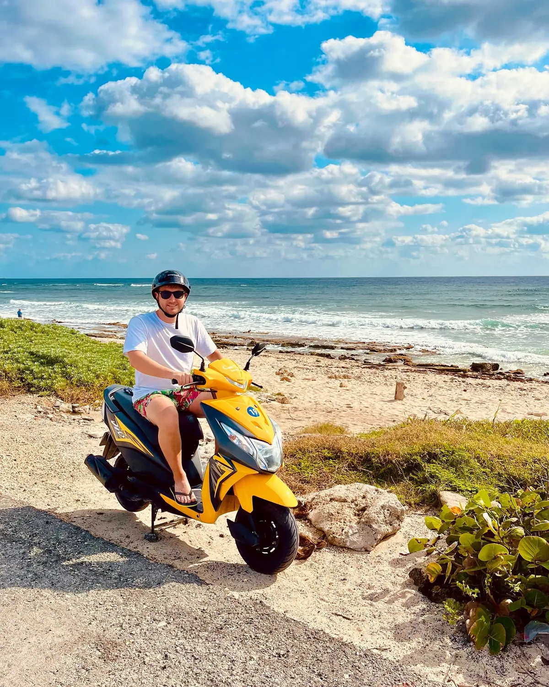
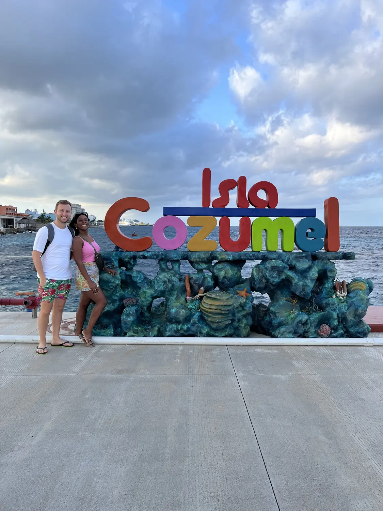

How to do Cozumel01
Scooter beach-hopping around the island
📍 Isla Cozumel
This was our favourite way to see Cozumel: renting a scooter was cheap and easy, and we spent the day looping the island, stopping at whatever beach or cove looked good. The main road hugs the coast the whole way round, so you're never far from the water. Fill up on fuel, grab a helmet and just go — it's the freedom that makes the day.
Rent a scooterLoop the whole island